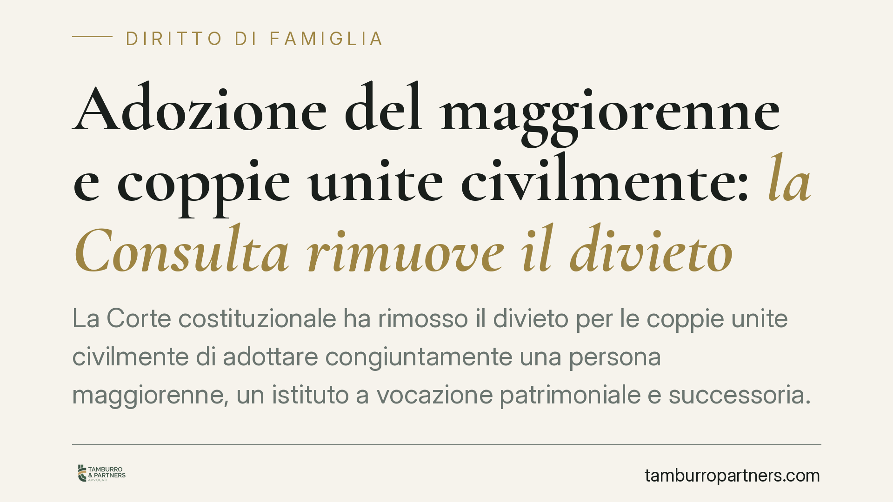

Adozione del maggiorenne e coppie unite civilmente: la Consulta rimuove il divieto
La Corte costituzionale ha rimosso il divieto per le coppie unite civilmente di adottare congiuntamente una persona maggiorenne, un istituto a vocazione patrimoniale e successoria. Resta invece affidata al legislatore la disciplina dell'adozione internazionale dei minori. La distinzione non è casuale: risponde alla diversa funzione dei due istituti e tocca direttamente la posizione dei legittimari.

Il fatto
La Corte costituzionale è intervenuta sul regime dell'adozione del maggiorenne applicato alle coppie unite civilmente ai sensi della legge n. 76 del 2016. Il giudice delle leggi ha dichiarato illegittimo il divieto che impediva alle parti dell'unione civile di adottare congiuntamente una persona maggiore di età, estendendo loro una facoltà già riconosciuta ai coniugi.
Sul diverso fronte dell'adozione internazionale dei minori, la Corte ha invece rimesso la scelta al Parlamento, senza introdurre una disciplina sostitutiva. Al momento della stesura di questo contributo la sentenza risulta nota per comunicato; gli estremi completi (numero e anno) e la motivazione integrale vanno verificati nel testo pubblicato. Chi intenda agire deve quindi fare riferimento alla pronuncia depositata e non a una sintesi giornalistica.
Inquadramento normativo
L'adozione del maggiorenne è disciplinata dagli articoli 291 e seguenti del codice civile. È un istituto distinto dall'adozione del minore: non ha finalità di tutela di un soggetto vulnerabile, ma funzione essenzialmente patrimoniale e successoria. Serve, nella prassi, a creare un rapporto di filiazione giuridica tra adulti, con rilevanti effetti sull'eredità.
L'articolo 291 c.c. richiede alcuni presupposti rigorosi. Tra questi, la differenza di età tra adottante e adottato deve essere di almeno diciotto anni: non una generica "differenza di età", ma un divario preciso fissato dalla norma. L'articolo 297 c.c. richiede inoltre il consenso del coniuge dell'adottante e dell'adottato, consenso che — in forza del rinvio operato dalla legge n. 76 del 2016 — deve ora intendersi riferibile anche alla parte dell'unione civile.
Il nodo interpretativo risolto dalla Corte riguarda proprio l'accesso congiunto delle parti dell'unione civile all'adozione del maggiorenne. La diversa sorte riservata all'adozione internazionale dei minori si spiega con la diversa natura degli istituti: nell'adozione del maggiorenne prevale la dimensione patrimoniale e il consenso tra adulti; nell'adozione del minore prevale l'interesse del minore e la tutela di un soggetto debole, materia che la Corte ha ritenuto rimettere alla discrezionalità del legislatore.
Implicazioni pratiche
Per le coppie unite civilmente si apre la possibilità di adottare congiuntamente una persona maggiorenne, con effetti che incidono soprattutto sul piano successorio.
L'adottato maggiorenne assume la posizione di figlio dell'adottante e diventa legittimario, cioè soggetto cui la legge riserva una quota di eredità sottratta alla libera disponibilità del testatore. Questo modifica gli equilibri successori all'interno della famiglia: la presenza di un adottato riduce la porzione disponibile e incide sulle aspettative degli altri eredi legittimari.
Va tenuto presente che l'adozione del maggiorenne non recide i rapporti con la famiglia d'origine dell'adottato, che conserva i propri diritti e doveri. Si tratta quindi di un rapporto che si aggiunge, non sostituisce. Prima di procedere è opportuno un esame preventivo della singola situazione, poiché gli effetti patrimoniali variano a seconda della composizione del nucleo familiare e dell'eventuale presenza di altri legittimari.
Sul versante dell'adozione internazionale dei minori nulla cambia in via immediata: finché il Parlamento non interviene, resta il quadro vigente. Eventuali progetti genitoriali in quest'ambito vanno valutati alla luce della normativa attuale e non di aspettative legate a una riforma non ancora intervenuta.
Cosa fare in concreto
- Verificare i presupposti di legge: accertare la differenza di almeno diciotto anni tra adottante e adottato prevista dall'art. 291 c.c.
- Raccogliere i consensi richiesti: l'adozione presuppone il consenso delle parti dell'unione civile e dell'adottato, secondo l'art. 297 c.c.
- Valutare l'impatto successorio: considerare la posizione degli altri legittimari e l'effetto dell'adozione sulla quota disponibile.
- Consultare il testo depositato della sentenza: fondare ogni decisione sulla motivazione integrale, non su sintesi divulgative.
- Distinguere i due piani: tenere separata la questione dell'adozione del maggiorenne, oggi praticabile, da quella dell'adozione internazionale dei minori, ancora rimessa al legislatore.
---
Contributo informativo a cura di Tamburro & Partners - Avv. Giuseppe Tamburro. Non costituisce parere legale.
Ogni famiglia ha il suo equilibrio.
Separazione, divorzio, affidamento, assegno: se vuoi un confronto riservato su una specifica situazione, scrivi allo studio. Ti rispondiamo entro un giorno lavorativo.